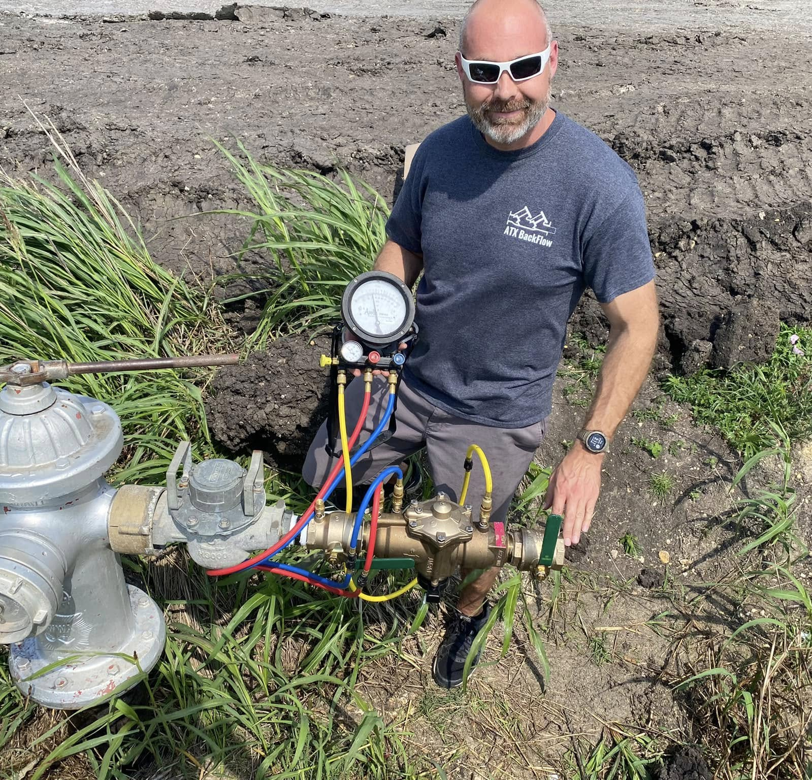
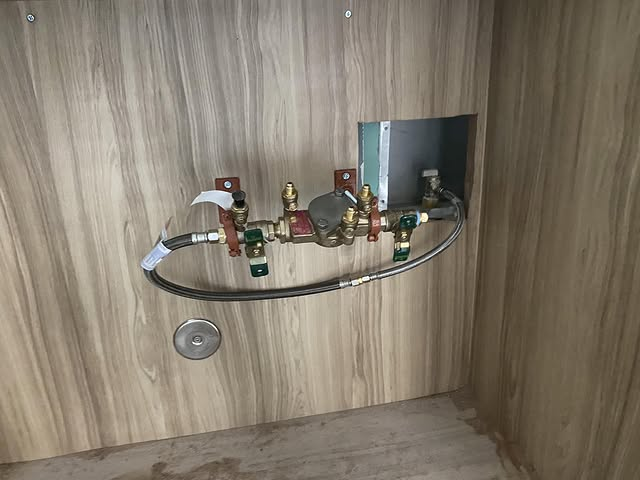
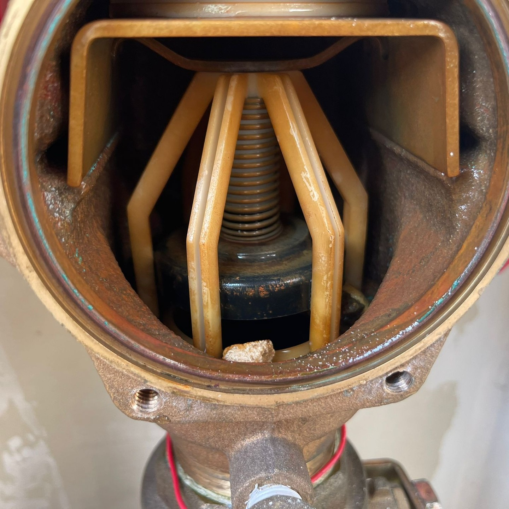
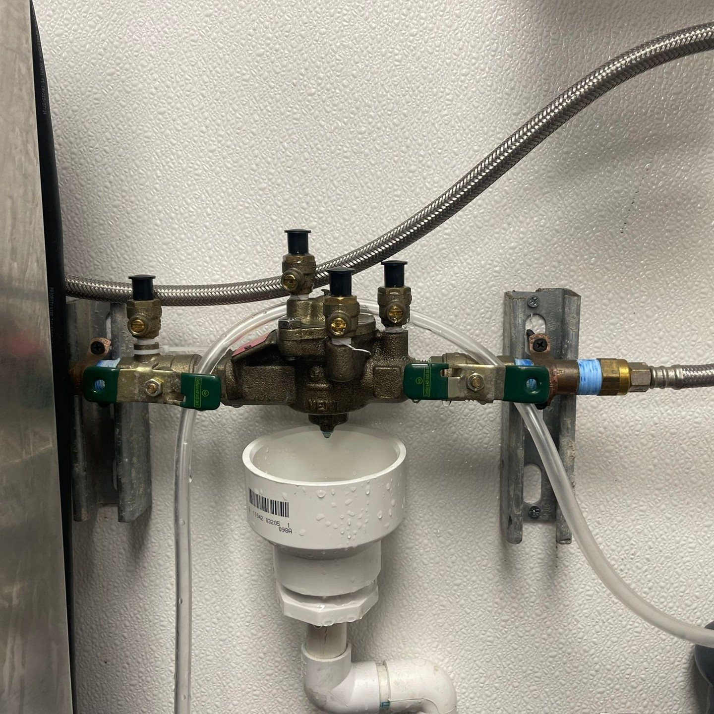
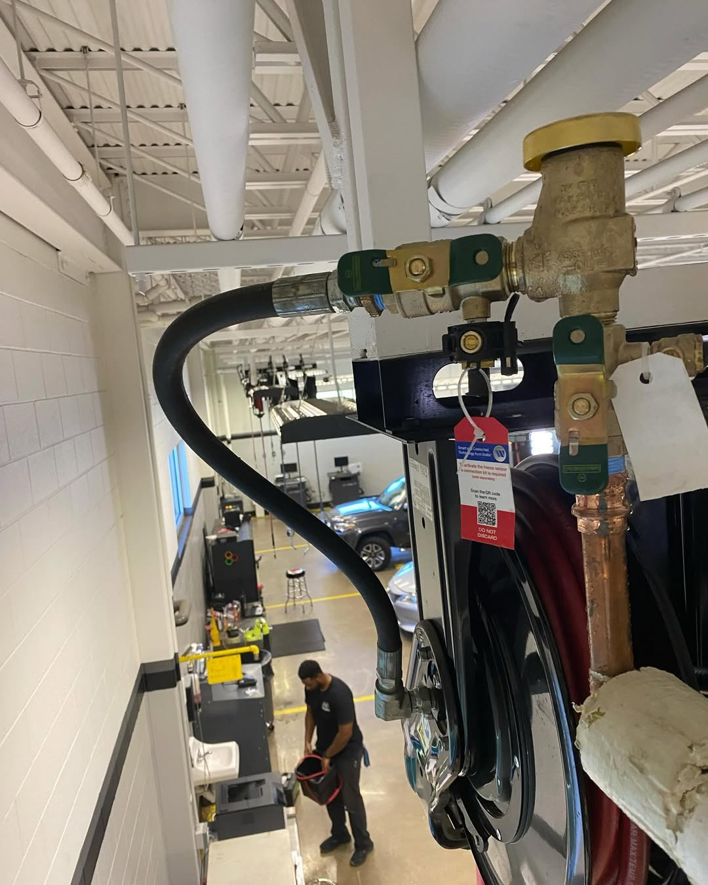
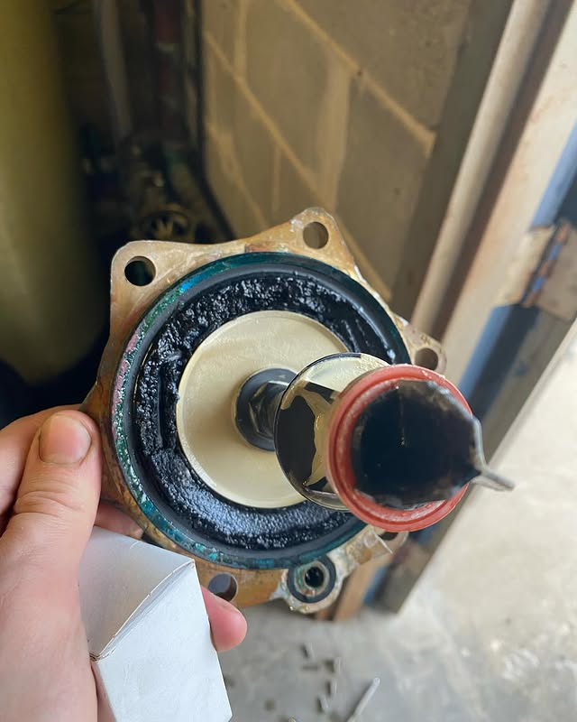
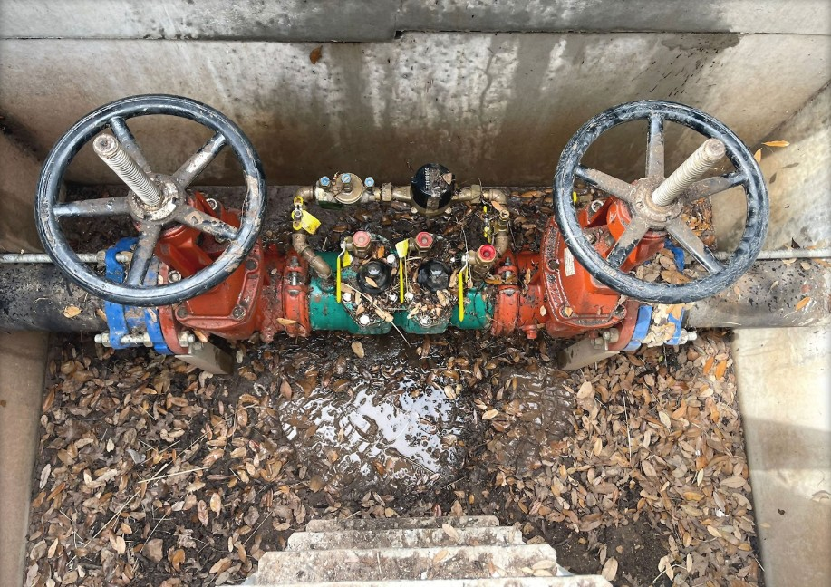

A
Repair Before Replace
When an assembly fails the test, our first answer is to diagnose the failure. Most failures are repairable. Replacement is the last option, not the default.
We're a certified backflow team operating out of Round Rock and serving the greater Austin area. Backflow prevention is the only thing we focus on, and that focus is what we offer.
ATX BackFlow was started by a small team of certified testers who got tired of the way backflow work was being done in the Austin area. Too many shops treating it as an upsell opportunity. Too many failed tests being used as a sales tool to push replacement instead of repair. Too many missed reports and confused customers wondering why they got a violation notice from the city.
We built ATX BackFlow to do it differently. Test the assembly. Tell you the truth. Repair what can be repaired. File the report. Move on. That's the whole job, and that's all we do.
Four years in, we've tested, repaired, and rebuilt assemblies across Austin, Round Rock, Georgetown, Cedar Park, and Hutto. The work is the same whether it's a half-inch irrigation backflow at a house in Pflugerville or a twelve-inch reduced pressure assembly on a fire system in downtown Austin. We treat both with the same standard.

When an assembly fails the test, our first answer is to diagnose the failure. Most failures are repairable. Replacement is the last option, not the default.
Every test we perform gets documented and submitted to the appropriate water authority. You get a copy. You don't have to chase it. You don't have to file it yourself.
If we say we'll be there at 10, we're there at 10. If something delays us, you get a call. We don't work in vague half-day windows.
Residential meter pits, commercial mechanical rooms, fire system risers, rebuild internals. The range of what we work on is wide. The standard isn't.







Every backflow tester operating in Texas is required to be licensed by the Texas Commission on Environmental Quality. We carry that license, we carry general liability insurance, and we're registered with the reporting platforms used by the water authorities in our service area.
You don't need to ask for any of this. We provide it as part of the job. If a tester won't show you their TCEQ license number, that's the answer.
Residential or commercial. Same-week scheduling. Reports filed.